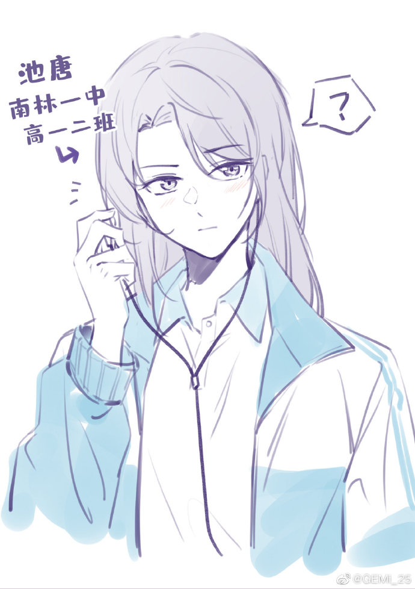

Nguyễn Hoàng Kim Oanh
Giật mình, thu đã vụt tan
Nắng dùng dắng đỏ, gió bàng hoàng xanh
Thời gian guồng chỉ mong manh
Nhớ tê tái nhớ, buồn loanh quanh... buồn!
Sao làm nước mắt mưa tuôn
Chiều hun hút bóng sóng cuồn cuộn trôi?
Tìm chi quả chín vừa rơi
Quả xanh trót rụng, hoa thôi, trót tàn...
Lỡ rồi, chuyện ấy đò ngang
Lỡ làng thôi lỡ, đò sang... lỡ đò!
N.H.K.O
Tác giả: Nguyễn Hoàng Kim Oanh
Điện thoại: 0996.641.643
Email:kimoanhtuyet@gmail.com
Địa chỉ: Thành phố Hồ Chí Minh